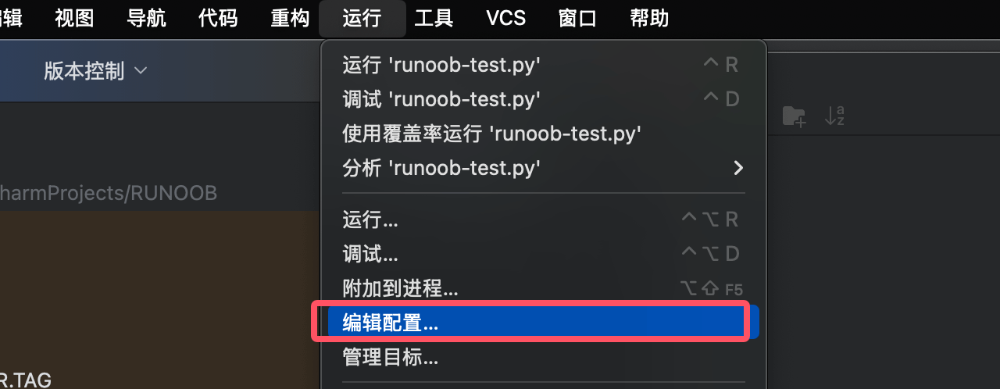

PyCharm 実行とデバッグ
PyCharm は強力な実行・デバッグツールを提供し、開発者が Python コードの問題を効率的に実行・調査するのに役立ちます。このセクションでは、環境設定、スクリプト実行、デバッグのテクニックについて詳しく説明します。実行環境の設定
Python インタープリターの設定
インタープリター設定を開く：設定 → プロジェクト → Python インタープリター（Windows/Linux：Ctrl+Alt+S、Mac：⌘,）。
インタープリターを選択：
仮想環境（推奨）：
Virtualenv/Conda/Pipenvシステムインタープリター：インストール済みの Python を直接使用
リモートインタープリター：サーバーまたは Docker 環境に接続

依存パッケージをインストール：
インタープリター画面でクリック
+パッケージを検索してインストール（例：requests）またはターミナルで実行
pip install package_name

実行パラメータの設定
実行構成を開く：
上部ツールバー →
実行 → 構成の編集（Run → Edit Configurations）または実行ボタンの横にある設定ドロップダウンメニューをクリック

Python 構成を追加：+ をクリック → Python を選択

主要パラメータ：
スクリプトパス：実行する
.pyファイルパラメータ（Parameters）：コマンドライン引数を入力（例：
--port 8000）作業ディレクトリ：スクリプト実行時のカレントディレクトリを設定
環境変数：カスタム環境変数を追加（例：
PYTHONPATH）

構成を保存：「適用」→「OK」をクリック。
Python スクリプトの実行
単一ファイルの実行
方法1：右クリックで実行：
-
エディターで右クリック →
実行 'ファイル名'（Run 'filename'）
方法2：ツールバーで実行：
-
上部ツールバーの緑色の実行ボタン ▶️ をクリック
方法3：ショートカットキーで実行：
-
Shift + F10（現在のファイルを実行） -
Ctrl + Shift + F10（編集中のファイルを実行）

モジュール実行（Flask/Django など）
モジュール実行の構成：実行構成でスクリプトパスではなくモジュール名を選択します。
例：
モジュール名：
flaskパラメータ：
run --port=5000
パラメータ付きでモジュールを実行：
# 例如运行 Django 开发服务器 python manage.py runserver 0.0.0.0:8000
実行構成の「パラメータ」欄に「runserver 0.0.0.0:8000」と入力

コードのデバッグ
ブレークポイントの設定
ブレークポイントの追加：
-
行番号の左側をクリック（赤い点が表示されます）
-
ブレークポイントを右クリックして条件を設定できます（例：
x > 10）
ブレークポイントの種類：
-
ラインブレークポイント：指定行で一時停止
-
例外ブレークポイント：例外がスローされたときに一時停止（
运行 → 查看断点 → 添加 Python 异常断点）
デバッグを開始：
-
ツールバーの
🐞 デバッグボタンをクリック -
またはショートカットキー
Shift + F9

変数ウォッチ（Watches）
変数の表示：
-
デバッグ開始後、
变量（Variables）パネルで現在のスコープの変数値を確認します -
変数をダブルクリックすると値を編集できます（一時的なテスト用）
ウォッチの追加：
-
に
监视（Watches）パネルでクリック+ -
変数名または式を入力（例：
len(items)）
デバッグ制御操作
| 操作 | ショートカットキー（Win/Linux） | ショートカットキー（Mac） | 説明 |
|---|---|---|---|
| ステップオーバー（Step Over） | F8 | F8 | 現在の行を実行し、関数の中に入りません |
| ステップイン（Step Into） | F7 | F7 | 関数の中に入ってデバッグします |
| ステップアウト（Step Out） | Shift + F8 | ⇧ + F8 | 現在の関数を実行し終えたら呼び出し元に戻ります |
| 再開（Resume） | F9 | ⌘ + F8 | 次のブレークポイントまで実行を続けます |
| 停止（Stop） | Ctrl + F2 | ⌘ + F2 | デバッグセッションを終了します |
デバッグコンソール（Debug Console）
対話型デバッグ：
-
デバッグ中に、
デバッグ コンソールPython コードを直接実行できます -
例：一時的に関数を呼び出したり変数を変更したりする
式の評価：
-
コードを選択 → 右クリック →
评估表达式（Evaluate Expression） -
またはショートカットキー
Alt + F8
高度なデバッグテクニック
リモートデバッグ
リモートインタープリターの設定：
-
文件 → 设置 → Python 解释器 → 添加远程解释器 -
SSH、Docker、Vagrant をサポート
リモートコードのデバッグ：
-
ブレークポイントとデバッグ操作はローカルデバッグと同じです
マルチプロセスデバッグ
子プロセスのデバッグ：
-
実行構成でチェックを入れます
在子进程中调试（Debug child processes） -
に対応
multiprocessing或subprocessシナリオ
プロセスにアタッチ：
-
运行 → 附加到本地进程（Attach to Local Process） -
実行中の Python プロセスを選択
よくある問題の解決
Q1：ブレークポイントが機能しない？
-
インタープリターがプロジェクト環境と一致しているか確認します
-
コードが保存されていることを確認（
Ctrl + S） -
ブレークポイントが無効になっていないか確認（ブレークポイントアイコンがグレーの場合）
Q2：ユニットテストをデバッグするには？
-
テストファイルで右クリック →
デバッグ 'テスト名' -
または使用
pytest/unittest専用の実行構成
Q3：デバッグ時に変数が「Unknown」と表示される？
-
コード構造を最適化し、複雑すぎる式を避けます
-
使用
Watches手動でウォッチ変数を追加
デバッグショートカットキー
| シナリオ | 操作 |
|---|---|
| 現在のファイルをすばやく実行 | Shift + F10 |
| デバッグを開始 | Shift + F9 |
| 条件付きブレークポイント | ブレークポイントを右クリック → 条件を設定 |
| 変数値を表示 | デバッグ時にVariablesパネルで表示 |
| 一時的にコードを実行 | デバッグコンソールでコマンドを入力 |
| マルチプロセスデバッグ | 実行構成でチェックを入れるDebug child processes |